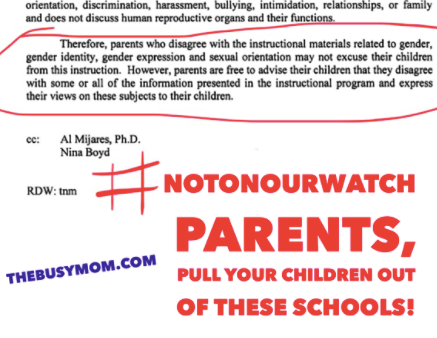

Van Mows Down Numerous Pedestrians In Toronto
Amid new allegations, Willow Creek reopens Bill Hybels probe: ‘We are sorry’
Islamic Extremism Remains Top Driver in Persecution of Christians Across Globe
ISIS violence forcing Christians out of major Pakistani city
ISIS suicide bomber kills 57 at Kabul voter registration center
Man linked to 9/11 attacks caught by U.S.-backed fighters in Syria
Bipartisan group of senators calls on Turkey to release American pastor
Erdogan Again Shows That He’s Holding Him Hostage...

MA preschool bans kids from using term 'best friend'

Parent Revolt Against Planned Parenthood School Sex-Ed Perversion Reaches Overseas
CA’s New Sex-Ed Curriculum Is About To Roll Out... What You Need To Know [warning: explicit]
Professor tells conservative student 'f--- your life'; student faces regular discrimination
YouTube ran ads from over 300 companies on extremist, white nationalist, pedophilia channels
Hardly a Stir When Starbucks Denied a Cop...
Jordan Peterson Racism Accusations Miss Mark
GQ Magazine Deems the Holy Bible One of the Most ‘Overrated’ Books of All Time
Nashville Waffle House shooter in custody

India introduces death penalty for child rapists
Biden wanted to run for president in 2016 but feared Clintons would 'destroy' him
'You guys don’t understand these people'

Inside the Dem Playbook: Publicly funded abortion, 'agenda that places race and class at forefront'
Kevin Williamson Explains What Happened at the Atlantic
Facebook sets new lobbying record
Wednesday earnings: The numbers to watch for an advertiser revolt

Diamond and Silk to Testify Before Congress About Facebook Censorship
Where Countries Are Tinderboxes and Facebook Is a Match
His Suffering Sparked a Movement: Remembering David Brainerd on His 300th Birthday
Throw away your romaine lettuce...
DOJ demands info from all four major U.S. wireless carriers in probe of alleged collusion